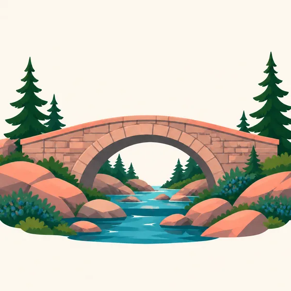
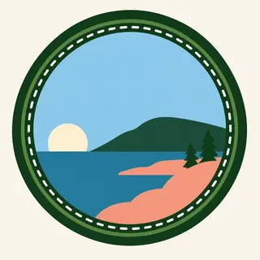

01
Cadillac Mountain
The highest summit on the United States Atlantic seaboard. On clear days the Gulf of Maine reads as a map. The road to the top is managed; check NPS before you plan a sunrise.
TrailMark Archive Edition
Maine | Atlantic coast
Granite headlands meet spruce and tide. The mountain behind the shore is close enough to climb before the light leaves the water.
Archive No. TM-ACA-005
National Park since 1919
Collection Atlantic Parks
Park Overview
Acadia protects a broken edge of the Maine coast where glaciated granite, spruce-fir forest, and tide share the same afternoon.
The park was established in 1919 as Lafayette National Park, the first national park east of the Mississippi, and renamed Acadia in 1929. Mount Desert Island holds the best-known mountains, but the park also includes Schoodic Peninsula and Isle au Haut.
Much of what visitors walk was assembled through gifts of land, including the carriage-road system associated with John D. Rockefeller Jr. The roads are for walking, bicycles, and horses, not for cars.
Emotional Thesis
In the western parks, scale usually means distance. In Acadia, scale means contrast: a pink granite summit, then cold water, then a forest so close the two landscapes share a trail.
Fog does as much work as sunshine. A headland that looked sharp at noon can disappear before you finish the loop.
Landscape Highlights
01
The highest summit on the United States Atlantic seaboard. On clear days the Gulf of Maine reads as a map. The road to the top is managed; check NPS before you plan a sunrise.
02
Broken-stone roads and granite bridges cross the island without cars. They are the best way to understand how the park was built as a gift as well as a reserve.
03
Thunder Hole, Sand Beach, and the headlands are the same granite the glaciers rounded, now worked by tide. Slippery rock and sudden waves are the shoreline rule.
Wildlife
Acadia wildlife is a meeting of boreal forest and cold Atlantic water, packed onto a small island.

01
Peregrine falcons nest on the cliffs again after a long absence. Nesting areas close. The closure is the conservation.
02
Tidepools hold the other wilderness: barnacles, urchins, and rockweed that vanish under the next tide.
03
Common loons, harbor seals, and the occasional whale offshore belong to the same park as white-tailed deer in the spruce.
Geology
Cadillac and the neighboring summits are granite the glaciers rounded, then the sea flooded the low places between them.
01
Glacial polish and erratic boulders are easy to find once you know to look down instead of only at the view.
02
The U-shaped valleys and the drowned Somes Sound are the same ice story told above and below the tide line.
03
Wave-cut benches on the headlands show the ocean continuing the work the ice started.
Migrating warblers move through the hardwoods while the carriage roads are still quiet. Ice can linger in the notches.
The island fills. Fog and cruise-ship days change the light more than the calendar does. Go early if you want the shore to yourself.
Blueberry barrens and maple slopes turn, and the air goes sharp. This is the season many Mainers would choose for you.
The park road system closes in sections. Snow, ice, and a dark sea make the same headlands feel like a different country. Check NPS for access.
Photography
Acadia rewards a photographer who watches water level and fog as carefully as the sun.
01
A low tide opens pools and a high tide turns the same rocks into a clean line. Neither is a mistake if you meant it.
02
Pink stone goes loud at sunset. Include spruce or water so the color has a cool edge.
03
If a closure is posted for peregrines, the photograph is the one you do not take from the rope line.
Field Notes
On this island the summit and the tidepools can share a morning, which is a kind of luxury the big western parks rarely allow.
TrailMark Field Notes

Badge Story
The Acadia badge holds a headland, evergreen, and cold water in one circle, the island reduced to its three materials.
Blue water is the Gulf of Maine, not a lake.
The granite reads pink even at small size.
Spruce keeps the badge from becoming only a sunset picture.
Archive No.005
LocationMount Desert Island
ReleaseAtlantic Mark
Stewardship / Safety
Acadia injuries and rescues cluster on wet granite and on people who treat the ocean like a lake. Check NPS for road reservations and closures before you go.
Stay off wet sloping granite near the surf. A wave does not need to be large to take your feet.
Give nesting peregrines their posted distance.
Carriage roads are shared with horses and bicycles. Announce yourself and do not widen the path.
Leave tidepool animals where they are. A pool is a neighborhood, not a souvenir tray.
Current conditions, fees, and alerts are on the National Park Service site.
Continue the Archive
Olympic is the Pacific answer to a park where forest and ocean share a boundary. Great Smoky Mountains carries the eastern hardwood story inland.